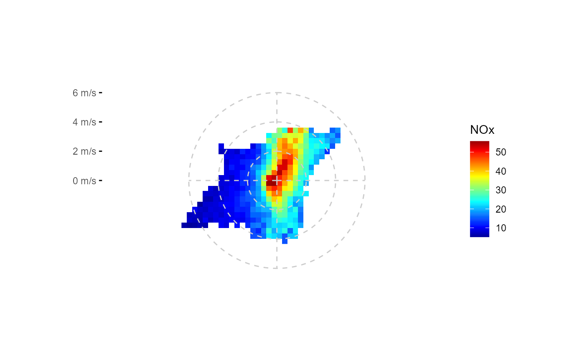
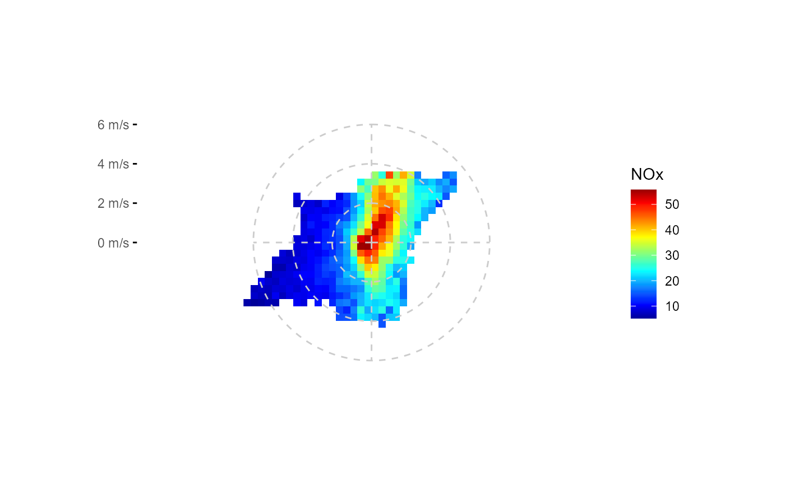

ggplot2 wrapper to create a wind-based polar plot with cartesian coords
Source:R/ggpolarplot.R
ggpolarplot.RdInspired and derived from openair::polarPlot(), i.e. applying a stat function on data to yield a wind direction +
wind velocity heatmap, (in cartesian u, v wind component space); includes options for smoothing, flexible grid
setting, flexible stat functions, data extrapolation and plotting over a raster map.
ggpolarplot(
data,
ws,
wd,
z,
groupings = grp(),
fun = "mean",
fun.args = list(na.rm = TRUE),
nmin = 3,
ws_max = NA,
smooth = TRUE,
k = 200,
extrapolate = TRUE,
dist = 0.1,
pixels = 80^2,
fill_scale = scale_fill_gradientn(colours = matlab::jet.colors(20), na.value = NA),
ylabels = scales::unit_format(unit = "m/s"),
breaks = waiver(),
bg = NULL,
...
)Arguments
- data
tibble containing wind speed, wind direction and air pollutant data
- ws
symbol giving the wind velocity parameter name (wind velocity preferably in m/s)
- wd
symbol giving the wind direction parameter name in degrees
- z
symbol giving the parameter name to be summarised
- groupings
additional groupings. Use helper
grp()to create- fun
function or list of functions for summary.
- fun.args
a list of extra arguments to pass to fun.
- nmin
numeric, minimum number of values for fun, if n < nmin: NA is returned
- ws_max
numeric or Inf, maximum wind velocity for binning: above ws_max, z is set NA
- smooth
TRUE/FALSE, applies if groups = c("u", "v"); should smoothing of summary results should be performed using
fit_gam_surface()?- k
numeric, applies if smooth = TRUE; degree of smoothing in smooth term in
fit_gam_surface()- extrapolate
TRUE/FALSE, applies if smooth = TRUE;
fit_gam_surface()returns extrapolated (predicted) values for u, v coordinates that otherwise would have have NA for summarised z if extrapolate = TRUE, those values are returned (to a certain degree depending on the value of dist)- dist
numeric, fraction of 1, applies if smooth = TRUE and extrapolate = TRUE; maximum distance to next coordinate-pair at which the result of fit_gam_surface(z) should be returned
- pixels
number of bins at the 2-dimensional u, v wind component coordinate system
- fill_scale
ggplot2 continuous fill scale, e.g.
scale_fill_gradientn(). If prefered the scale can added later to the returned ggplot object, but a message that the scale is replaced will be printed.- ylabels
function to format ylabels. Default adds unit " m/s"
- breaks
waiver() or numeric vector, provides y-axis breaks
- bg
raster map, e.g. ggmap object as plot background
- ...
Other arguments passed on to
ggplot2::geom_raster(). Used to set an aesthetic to a fixed value
Value
ggplot2::ggplot() object
Examples
library(ggplot2)
library(dplyr)
#>
#> Attaching package: 'dplyr'
#> The following objects are masked from 'package:stats':
#>
#> filter, lag
#> The following objects are masked from 'package:base':
#>
#> intersect, setdiff, setequal, union
fn <- rOstluft.data::f("Zch_Stampfenbachstrasse_2010-2014.csv")
df <- rOstluft::read_airmo_csv(fn) %>%
rOstluft::rolf_to_openair() %>%
dplyr::mutate(wday = lubridate::wday(date, label = TRUE, week_start = 1))
# simple
ggpolarplot(df, wd = wd, ws = ws, z = NOx)
#> Warning: Removed 3772 rows containing missing values (geom_raster).
 # change smoothing degree, add custom breaks and change grid style, different fill scale
fs <- scale_fill_viridis_c(na.value = NA)
ggpolarplot(df, wd = wd, ws = ws, z = NOx, k = 25, fill_scale = fs, breaks = seq(0,8,2)) +
theme(panel.grid.major = element_line(linetype = 2, size = 0.25, color = "gray80"))
#> Warning: Removed 3772 rows containing missing values (geom_raster).
# change smoothing degree, add custom breaks and change grid style, different fill scale
fs <- scale_fill_viridis_c(na.value = NA)
ggpolarplot(df, wd = wd, ws = ws, z = NOx, k = 25, fill_scale = fs, breaks = seq(0,8,2)) +
theme(panel.grid.major = element_line(linetype = 2, size = 0.25, color = "gray80"))
#> Warning: Removed 3772 rows containing missing values (geom_raster).
 # no data extrapolation
ggpolarplot(df, wd = wd, ws = ws, z = NOx, extrapolate = FALSE, breaks = seq(0,8,2))
#> Warning: Removed 5402 rows containing missing values (geom_raster).
# no data extrapolation
ggpolarplot(df, wd = wd, ws = ws, z = NOx, extrapolate = FALSE, breaks = seq(0,8,2))
#> Warning: Removed 5402 rows containing missing values (geom_raster).
 # no smoothing
ggpolarplot(df, wd = wd, ws = ws, z = NOx, smooth = FALSE, breaks = seq(0,8,2))
#> Warning: Removed 5402 rows containing missing values (geom_raster).
# no smoothing
ggpolarplot(df, wd = wd, ws = ws, z = NOx, smooth = FALSE, breaks = seq(0,8,2))
#> Warning: Removed 5402 rows containing missing values (geom_raster).
 # squish maximum NOx concentration and cut off wind velocity at 4 m/s
fs = scale_fill_viridis_squished(limits = c(0,50), breaks = seq(0,50,10), na.value = NA)
ggpolarplot(df, wd = wd, ws = ws, z = NOx, ws_max = 4, fill_scale = fs,
smooth = FALSE, breaks = c(0, 2, 4))
#> Warning: Removed 3450 rows containing missing values (geom_raster).
# squish maximum NOx concentration and cut off wind velocity at 4 m/s
fs = scale_fill_viridis_squished(limits = c(0,50), breaks = seq(0,50,10), na.value = NA)
ggpolarplot(df, wd = wd, ws = ws, z = NOx, ws_max = 4, fill_scale = fs,
smooth = FALSE, breaks = c(0, 2, 4))
#> Warning: Removed 3450 rows containing missing values (geom_raster).
 # like jet colors better, want it smoothed?
ggpolarplot(df, wd = wd, ws = ws, z = NOx, ws_max = 4, smooth = TRUE, breaks = 0:4) +
scale_fill_gradientn_squished(limits = c(0,50), breaks = seq(0,50,10),
na.value = NA, colors = matlab::jet.colors(100))
#> Scale for 'fill' is already present. Adding another scale for 'fill', which
#> will replace the existing scale.
#> Warning: Removed 1740 rows containing missing values (geom_raster).
# like jet colors better, want it smoothed?
ggpolarplot(df, wd = wd, ws = ws, z = NOx, ws_max = 4, smooth = TRUE, breaks = 0:4) +
scale_fill_gradientn_squished(limits = c(0,50), breaks = seq(0,50,10),
na.value = NA, colors = matlab::jet.colors(100))
#> Scale for 'fill' is already present. Adding another scale for 'fill', which
#> will replace the existing scale.
#> Warning: Removed 1740 rows containing missing values (geom_raster).
 # change binning parameters
ggpolarplot(df, wd = wd, ws = ws, z = NOx, smooth = FALSE, pixels = 50^2,
nmin = 10, breaks = seq(0,6,2))
#> Warning: Removed 2140 rows containing missing values (geom_raster).

# facetting variable must be included in grp
ggpolarplot(df, wd = wd, ws = ws, z = NOx, groupings = grp(wday),
ws_max = 4, pixels = 50^2, k = 25, breaks = c(0, 2, 4)) +
facet_wrap(vars(wday))
#> Warning: Removed 6006 rows containing missing values (geom_raster).
# change binning parameters
ggpolarplot(df, wd = wd, ws = ws, z = NOx, smooth = FALSE, pixels = 50^2,
nmin = 10, breaks = seq(0,6,2))
#> Warning: Removed 2140 rows containing missing values (geom_raster).

# facetting variable must be included in grp
ggpolarplot(df, wd = wd, ws = ws, z = NOx, groupings = grp(wday),
ws_max = 4, pixels = 50^2, k = 25, breaks = c(0, 2, 4)) +
facet_wrap(vars(wday))
#> Warning: Removed 6006 rows containing missing values (geom_raster).
 # different stat fun
ggpolarplot(df, wd = wd, ws = ws, z = NOx, fun = "quantile",
fun.args = list(probs = 0.95, na.rm = TRUE),
breaks = seq(0,10,2))
#> Warning: Removed 3772 rows containing missing values (geom_raster).
# different stat fun
ggpolarplot(df, wd = wd, ws = ws, z = NOx, fun = "quantile",
fun.args = list(probs = 0.95, na.rm = TRUE),
breaks = seq(0,10,2))
#> Warning: Removed 3772 rows containing missing values (geom_raster).
 # facetting by stat
ggpolarplot(df, wd = wd, ws = ws, z = NOx, fun = list("mean", "median"), ws_max = 4,
pixels = 50^2, k = 25, breaks = c(0, 2, 4)) +
facet_wrap(vars(stat))
#> Warning: Removed 1230 rows containing missing values (geom_raster).
# facetting by stat
ggpolarplot(df, wd = wd, ws = ws, z = NOx, fun = list("mean", "median"), ws_max = 4,
pixels = 50^2, k = 25, breaks = c(0, 2, 4)) +
facet_wrap(vars(stat))
#> Warning: Removed 1230 rows containing missing values (geom_raster).
 # background map, just remember the location on the map has no correlation with
# the overlaying data. Only the direction.
bb <- bbox_lv95(2683141, 1249040, 500)
#> Warning: Discarded datum CH1903+ in Proj4 definition
bg <- get_stamen_map(bb)
fs <- scale_fill_gradientn_squished(
limits = c(0,50), breaks = seq(0,50,10),
na.value = NA, colors = matlab::jet.colors(20)
)
ggpolarplot(df, wd = wd, ws = ws, z = NOx, ws_max = 4,
bg = bg, alpha = 0.6,
fill_scale = fs, smooth = TRUE, breaks = c(0,2,4)) +
theme(
panel.grid.major = element_line(linetype = 2, color = "black", size = 0.5)
)
#> Warning: Removed 1740 rows containing missing values (geom_raster).
# background map, just remember the location on the map has no correlation with
# the overlaying data. Only the direction.
bb <- bbox_lv95(2683141, 1249040, 500)
#> Warning: Discarded datum CH1903+ in Proj4 definition
bg <- get_stamen_map(bb)
fs <- scale_fill_gradientn_squished(
limits = c(0,50), breaks = seq(0,50,10),
na.value = NA, colors = matlab::jet.colors(20)
)
ggpolarplot(df, wd = wd, ws = ws, z = NOx, ws_max = 4,
bg = bg, alpha = 0.6,
fill_scale = fs, smooth = TRUE, breaks = c(0,2,4)) +
theme(
panel.grid.major = element_line(linetype = 2, color = "black", size = 0.5)
)
#> Warning: Removed 1740 rows containing missing values (geom_raster).